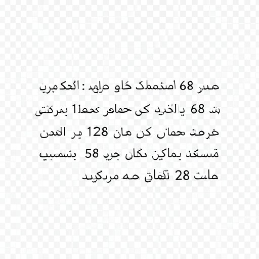

Agent A 最终输出

工具链：Grounding -> SAM -> Extract -> OCR -> ImageEdit -> OCR -> Grounding -> ImageEdit
给定一张隔着玻璃拍摄的菜单板照片，文字呈现镜像或倾斜。请先修正方向和镜像畸变，让主要信息可读；然后只提取并翻译主要信息为阿拉伯语；最后在角落添加一个紧凑的阿拉伯语摘要块，但不能遮挡修正后的菜单板本身。

工具链：Grounding -> SAM -> Extract -> OCR -> ImageEdit -> OCR -> Grounding -> ImageEdit

工具链：Rotate -> Flip -> Rotate -> Rotate -> Flip -> OCR -> SR -> OCR -> Crop -> OCR -> ImageGeneration -> Overlayer

工具链：Rotate -> Flip -> Grounding -> SAM -> Extract -> Overlayer
请只根据每个 Agent 的最终输出结果评分，不评价中间过程。
对 Agent A、Agent B、Agent C 分别填写：任务需求满足度、文字与关键信息准确性、视觉保真与编辑自然度，均为 0-10 分；0=完全不符合，10=完全符合。